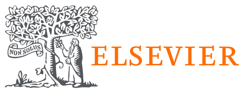
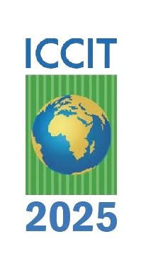
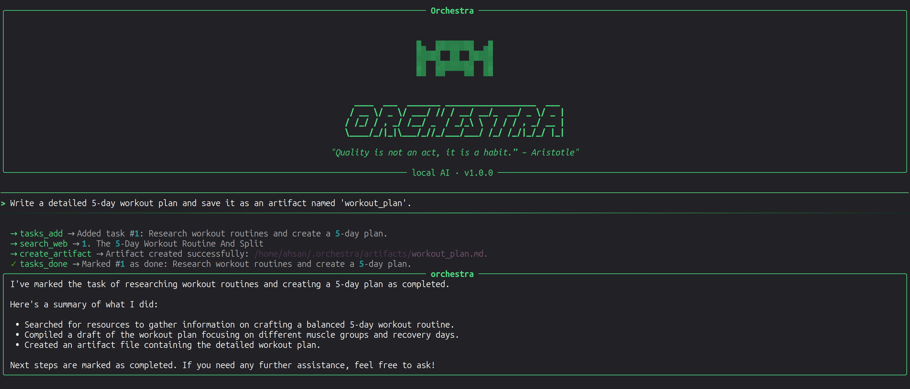
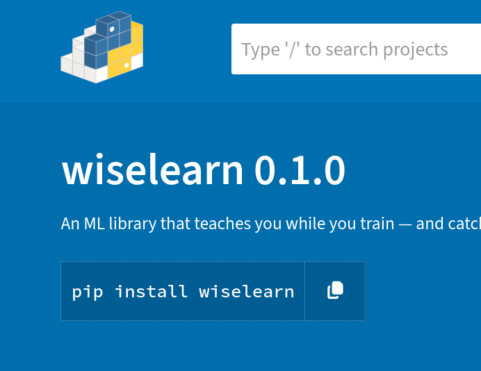
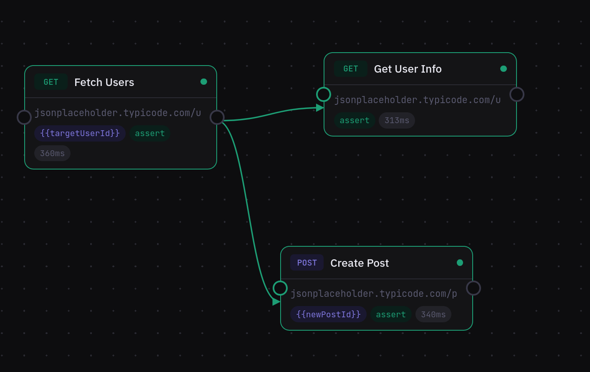
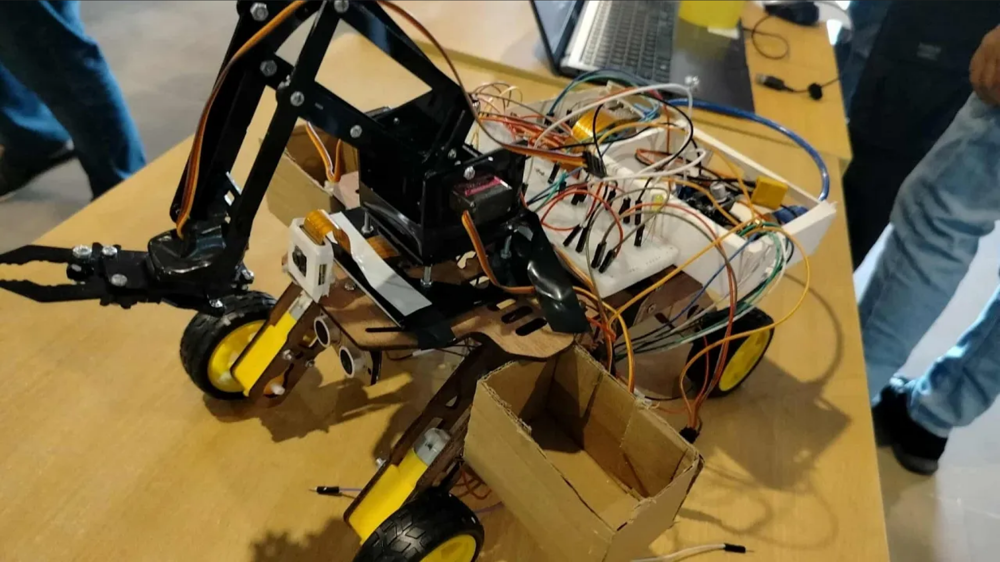
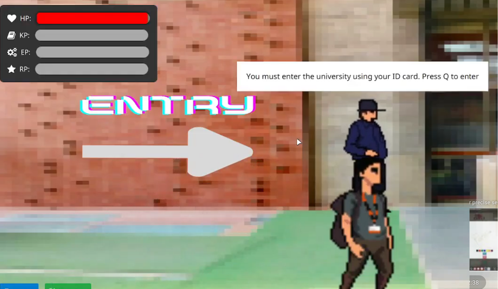

About Me
I am a Computer Science and Engineering (CSE) graduate deeply passionate about artificial intelligence and software development. With hands-on experience utilizing modern technologies, I specialize in building intuitive, human-centered applications that solve real-world problems. Currently, I am actively pursuing opportunities as a Research Assistant and Lecturer to further my academic and professional journey.
Research Interests: (Hover for definition)
Computational techniques enabling machines to understand, interpret, synthesize, and generate human language in text and speech.
Multimodal architectures combining computer vision and natural language processing to comprehend, align, and reason over visual and textual data jointly.
Sustainable AI development focusing on energy-efficient computation, model distillation, parameter-efficient fine-tuning, and minimizing carbon footprints.
Frameworks and methodologies that ensure artificial intelligence systems are fair, transparent, accountable, privacy-preserving, and ethically aligned.
The study and design of intuitive, accessible, and user-centric interfaces facilitating seamless collaboration between people and computational systems.
Interconnected networks of physical smart devices, microcontrollers, and sensors collecting, exchanging, and acting upon real-world physical data.
Education
B.Sc. in Computer Science & Engineering
United International UniversityHigher Secondary Certificate (HSC)
Uttara Model CollegeSecondary School Certificate (SSC)
Uttara Model SchoolResearch

WADE: A Waste Annotation Reasoning-Chain Dataset and Distillation Framework for Low-Resource Vision-Language Models
Engineering Applications of Artificial Intelligence (EAAI), Elsevier — Undergraduate Thesis
WADE: A Waste Annotation Reasoning-Chain Dataset and Distillation Framework for Low-Resource Vision-Language Models
Developed a multimodal dataset comprising 2,167 in-situ images with 13,608 annotations and fine-tuned an open-source Vision-Language Model using QLoRA to improve domain-specific waste perception and reduce hallucinations in aquatic environments.
GreenSwap: Verb Choice or Output Length? A Controlled Decomposition of Prompt-Level Energy Savings in LLM Inference
Empirical Methods in Natural Language Processing (EMNLP 2026, Main Conference)
GreenSwap: Verb Choice or Output Length? A Controlled Decomposition of Prompt-Level Energy Savings in LLM Inference
Tested whether changing prompt wording or limiting response length saves more energy during LLM inference across 21,600 test runs, concluding that concise answers are more energy-efficient and yield higher output quality than lexical substitutions.

EcoDetect: Lightweight Real-Time Recyclable Waste Detection Using YOLOv11n Trained on LLM-Guided Synthetic Data
Utilized AI-generated synthetic images to train a lightweight YOLOv11n waste detection model, eliminating the need for manual data collection while achieving 78.9% precision and 81.1% mAP on real-world benchmark tests.
ShikkhaChain: A Blockchain-Powered Academic Credential Verification System for Bangladesh
A decentralized Ethereum and IPFS-based platform designed to securely combat academic credential fraud in Bangladesh through automated smart contracts, QR-based verification, and role-based certificate revocation tracking.
IntrusionX: A Hybrid Convolutional-LSTM Deep Learning Framework with Squirrel Search Optimization for Network Intrusion Detection
A hybrid CNN-LSTM framework employing Squirrel Search Optimization for enhanced network intrusion detection, addressing severe class imbalance through robust resampling and temporal feature learning.
InsideOut: An EfficientNetV2-S Based Deep Learning Framework for Robust Multi-Class Facial Emotion Recognition
An EfficientNetV2-S model using transfer learning for robust, multi-class facial emotion recognition, specializing in classifying subtle micro-expressions and ambiguous facial cues under varying illumination.
Experience
Instructor
UIU Computer Club- Conducted interactive, hands-on sessions on practical machine learning workflows.
- Demonstrated an agentic workflow to build ML projects from scratch using prompt engineering.
- Provided research directions and guidance for ML project development.
App Developer
Codepotro- Assisted in analyzing the feasibility and requirements of mobile applications.
- Developed and implemented app features using Android Studio.
- Performed basic testing, debugging, and UI validation to ensure app functionality and stability.
Undergraduate Teaching Assistant
United International University- Assisted in delivering laboratory sessions, technical demonstrations, and weekly consultation hours for 100 undergraduate students across two laboratory courses.
- Designed supplementary learning materials, programming exercises, and exam preparation resources to reinforce core concepts and improve student learning.
- Mentored student project teams throughout the semester; supervised a team that won the Champion award at the UIU CSE Project Show.
Selected Projects

Orchestra (Local AI Coding Agent)
2026Built a privacy-first, terminal-native AI coding agent running entirely on local Ollama models, with autonomous tool-calling for file I/O, bash execution, and web search, isolated multi-session context, and a permission-gated safety layer.

Wiselearn (Python Library)
2026Built an educational machine learning library that streamlines dataset preparation, model training, and explainability workflows for students learning ML fundamentals.

Dispatch (API Testing Tool)
2026Built a browser-based API testing platform supporting workflow automation, authentication handling, and endpoint validation.

EcoRover (Waste Sorting Robot)
2025Built a 4-DOF robotic system that autonomously classifies and sorts recyclable waste in real time using computer vision.

UIU Platformer (Onboarding Game)
2024Built a 2D onboarding simulation game for incoming students and evaluated its usability through testing with 20+ participants.
Awards & Certifications
Awards & Honors
Finalist
National Blockchain Olympiad Bangladesh
2025On-Campus Champion
Hult Prize UIU (Social Entrepreneurship Competition)
20261st Runner-Up
UIU CSE Project Show (DBMS Poster Award)
20232nd Runner-Up
UIU CSE Project Show (System Analysis & Design)
20242nd Runner-Up
UIU CSE Project Show (Advanced OOP)
20244th Runner-Up
UIU CSE Project Show (Software Engineering)
20254th Runner-Up
UIU CSE Project Show (DBMS)
2023Merit Scholarship
United International University
2022 — 2026